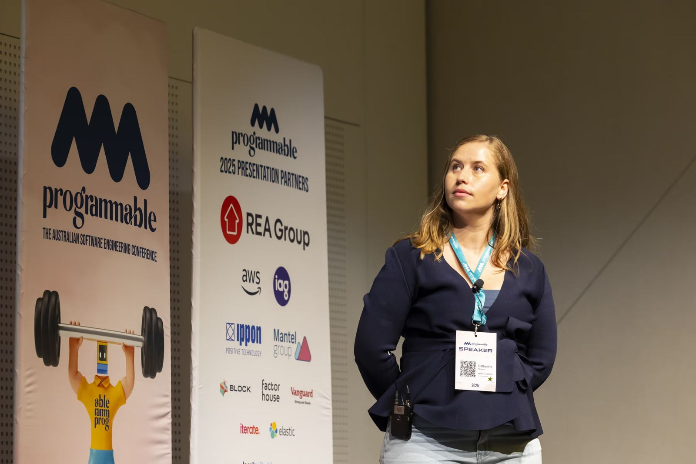

Conferences · Tech
Programmable 2027 Melbourne
- Dates
- Venue
- Melbourne Convention and Exhibition Centre (MCEC)
- Location
- Melbourne, Australia
- Format
- In-person
- Category
- Tech
- Industry
- Software development
- Organiser
- Programmable
- Official website
- https://www.programmable.tech/
About
Dates are local Australian dates (AEST/AEDT, ACST/ACDT or AWST depending on state).
Topics: software engineering, security, AI for developers.
No organiser attendance figure found on official pages (23 Nov 2026). Ranked by an estimated size tier 'medium' (our judgement from format, venue and scale, not an official number).
Sources
- Official — https://www.programmable.tech/
Venue
- Melbourne Convention and Exhibition Centre — Convention centre · 1 Convention Centre Place, South Wharf, Victoria 3006, Australia · 5,564 capacity